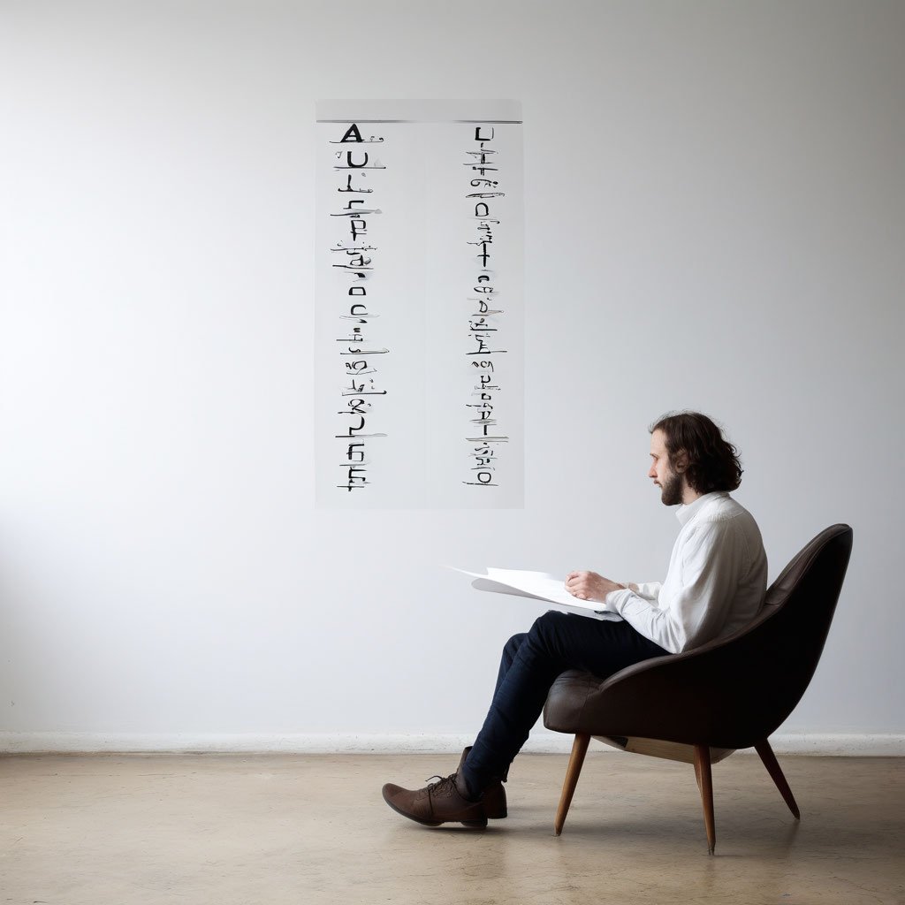

АВС-формула освобождения от груза негативных эмоций

Описание:
Техника «АВС-формула освобождения от груза негативных эмоций» помогает при тревоге, депрессии, гневе, улучшая способность принимать ответственность и решать проблемы.
Категория техники:
Слова
Время:
10 минут
Зачем:
Предложенная техника может быть полезна при работе со следующими проблемами: чувство тревоги; депрессия; агрессия, гнев; чувство вины; прокрастинация; расстройства сна; расстройства пищевого поведения. Научившись применять «АВС-модель», вы получите: способность принять ответственность за свою жизнь и свои действия; способность самостоятельно решать свои проблемы; терпимость к чужому мнению; способность давать себе и другим право на ошибку; гибкость к переменам и открытость миру; интерес к самому себе, признание себя как личности.
Как это работает:
Мышление, эмоции и поведение — главные психологические факторы жизнедеятельности человека. Они взаимосвязаны: изменение одного из них часто влияет на состояние других. Наше самочувствие определяют наши собственные мысли: причиной наших эмоциональных реакций становятся не события или другие люди, а то, как мы их воспринимаем, как оцениваем происходящее, опираясь на собственный опыт. Проще говоря, как мы думаем, так и чувствуем. Как часто, к примеру, мы говорим своим близким: «Ты очень сильно разозлил/расстроил меня!» Хотя правильнее было бы сказать: «Я очень сильно разозлил(а)/расстроил(а) себя!» Но для этого необходимо признать свои эмоции и осознать, что отнюдь не внешние события являются их источником, — эмоции формируются через призму имеющихся у нас внутренних иррациональных установок. Главная задача предложенной психотехники — помочь осознать, что психологические проблемы часто возникают в результате искаженного восприятия действительности, выявить иррациональные убеждения и заменить их на рациональные.
Алгоритм выполнения:
-
Основа теории РЭПТ — модель ABC, где А — событие, послужившее триггером для плохого самочувствия человека; B — когнитивные установки, убеждения, мысли, воспоминания человека об этом событии; C — эмоциональная реакция, вызванная этими мыслями и установками. Техника «АВС-формула освобождения от груза негативных эмоций» помогает осознать, что убеждения и мысли (В), связанные с данным событием (А), иррациональны и ведут к негативным реакциям (С). С помощью техники вы сможете принять вместо конкретных иррациональных установок (В) конкретные рациональные (В1), что приведет к появлению других эмоций (С1). Техника проста в выполнении, поэтому ее можно делать самостоятельно в домашних условиях.
-
Выберите негативную эмоцию (С), с которой хотите работать (если вы выполняете эту технику ежедневно, определите самую сильную негативную эмоцию, которую вы испытывали в течение последних 24 часов). Обратите внимание на такие эмоции, как страх, печаль, обида и гнев. Сосредоточьтесь на выбранном состоянии.
-
Вспомните ситуацию (А), которая вызвала эту эмоцию. Проанализируйте свои суждения об этом событии, чтобы выявить иррациональные установки. Анализируйте конкретную ситуацию, не отвлекаясь на другие, пока не обнаружите нужные суждения. ПРИМЕР. После работы вы чувствуете себя настолько уставшим, что думаете: «Я так устаю, что могу только лежать на диване». За этими мыслями могут скрываться иррациональные установки: «Я так устаю на работе, что просто умру, если буду делать что-то еще» или «Я должен всегда получать то, что я хочу».
-
Измените выявленные иррациональные установки на рациональные: сформулируйте новую мысль по поводу произошедшего события (В1), чтобы появилась другая эмоция (С1). ПРИМЕР. Я разозлился на клиента (С), потому что он сильно опоздал на встречу (А). В результате беседа прошла не очень удачно. Он должен был прийти вовремя (В). В1 — мой клиент занимается сложным видом деятельности, которую очень сложно прогнозировать, что и стало причиной опоздания. С1 — я сожалею, что клиент опоздал, но меня это не злит. В дополнение к технике вы можете вести дневник или составлять листы самопомощи. К примеру, можно записывать в них ответы на следующие вопросы:
-
Что случилось?
-
Что я при этом/после этого чувствовал(а), о чем думал(а)?
-
Что в моих мыслях/реакциях было иррациональным? Как закрепить полученные результаты Чтобы закрепить результаты, полученные после регулярного выполнения психотехники «АВС-формула освобождения от груза негативных эмоций», воспользуйтесь следующими советами:
-
Если вас вновь охватывает чувство вины, тревоги, неполноценности, напомните себе о том, что ваши мысли, эмоции, поведение изменились и вы стали лучше себя чувствовать. ПРИМЕР. Вы перестали считать себя никчемным человеком и стали получать желаемое. Или вы стали больше общаться с людьми, не переживая, что они вас отвергнут.
-
Постоянно проговаривайте свои новые рациональные установки, пока не почувствуете, что действительно верите в их правдивость. ПРИМЕР. Достигать новых высот — это прекрасно! Но я остаюсь целостной личностью и достойным человеком даже после неудачи.
-
Подвергайте сомнению свои иррациональные установки. ПРИМЕР. Чтобы стать успешным, нужно тяжело трудиться. Почему это убеждение верно? Каким образом успешность зависит от тяжести проделанной работы?
-
Идите на оправданный риск и делайте то, чего иррационально боитесь — например, выступать на публике, ездить в метро, петь в караоке и т. д.
-
Учитесь улавливать разницу между здоровыми негативными эмоциями (печаль, сожаление, разочарование) и нездоровыми негативными реакциями (депрессия, тревога, ненависть или жалость к себе), вызванными, например, тем, что вы не достигли поставленной цели.
-
Боритесь с прокрастинацией: выполняйте неприятные задачи сразу! Если выполните задачу не откладывая, вознаградите себя (прогулкой, покупкой, встречей с друзьями). Если вновь отложите и будете тянуть время, можно себя наказать: лишить просмотра фильма, чтения книги, общения с родными.
-
В любой ситуации помните, что у вас всегда есть выбор, как думать, чувствовать и вести себя.
Дополнительные упражнения:
- Диагностика наличия и выраженности иррациональных установок
- Кассинов Г. Рационально-эмоционально-поведенческая терапия как метод лечения эмоциональных расстройств. Психотерапия: от теории к практике. Материалы I съезда Российской терапевтической ассоциации. — СПб.: Изд. Психоневрологического ин-та им. В. М. Бехтерева, 1995.
- Уолен С. Рационально-эмотивная психотерапия: когнитивно-бихевиоральный подход. Веб-публикация: https://www.phantastike.com/practic_psychology/practical_guide_k/html/ [23.05.2020].
- Эллис А. Гуманистическая психотерапия: рационально-эмоциональный подход. — СПб.: Сова, 2002.
- Эллис А. Практика РЭПТ. Современная психотерапия. — СПб.: Речь, 2002.
- Эллис А. Психотренинг по методу Альберта Эллиса. — СПб.: Питер, 1999.
- Raypole, Crystal. Rational Emotive Behavior Therapy. Веб-публикация: https://www.healthline.com/health/rational-emotive-behavior-therapy#takeaway [10.05.2020].
- Марк Аврелий. Цитаты. Веб-публикация: https://ru.citaty.net/avtory/mark-avrelii/.
- Эллис А., Драйден У. Практика рационально-эмоциональной поведенческой терапии. — СПб.: Речь, 2002.
- Эпиктет. Цитаты. Веб-публикация: https://ru.citaty.net/avtory/epiktet.
- Уолен С., ДиГусепп Р., Уэсслер Р. Рационально-эмотивная психотерапия: когнитивно-бихевиоральный подход. — М.: Ин-т гуманитарных знаний, 1997.
- Ромек Е. А., Ромек В. Г. Логика эмоций и принципы рационально-эмоциональной поведенческой психотерапии // Индивидуальные различия в познании и общении: Сборник научных трудов. — Ростов н/Д.: Антей, 2007.
- Кассинов Г. Рационально-эмоционально-поведенческая терапия как метод лечения эмоциональных расстройств // Психотерапия: от теории к практике. Материалы I съезда Российской психотерапевтической ассоциации. — СПб.: Изд-во психоневрологического ин-та им. В. М. Бехтерева, 1995.
- Ellis, A. Reason and Emotion in Psychotherapy: A New and Comprehensive Method of Treating Human Disturbances — Citadel Press, 1962; Справочник практического психолога: Психотерапия / Сост. С. Л. Соловьева. — М.: ACT; СПб.: Сова, 2007.
- Эллис А., Драйден У. Указ. соч.